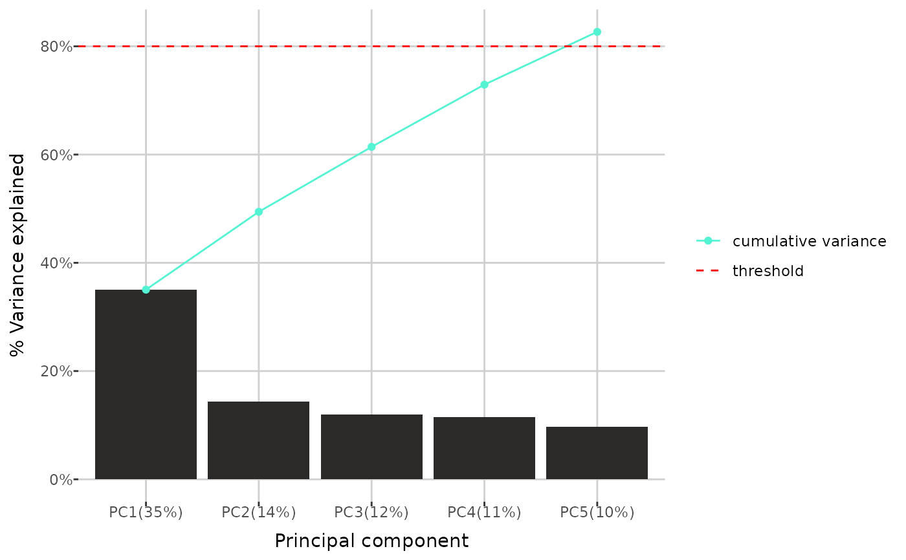

Plot of variance explained by principal components
pca_variance.Rdpca_variance() creates a barplot showing the variance explained by each
principal component in a Principal Component Analysis (PCA). It includes all
components for which the cumulative variance explained is below the
specified threshold, as well as the first component for which the cumulative
variance exceeds the threshold (or up to the specified maximum number, if
given). Optionally, a line representing the cumulative variance explained
can be included.
Arguments
- dat
a
raw_dataobject, the output of theread_data()function. The data have to be completed, for example using thecomplete_data()function.- threshold
a decimal indicating the maximum cumulative variance to include in the plot.
- type
a character specifying which rows to consider. The default is
"sample_type", which uses all rows. When set to"group", only observations of type "sample" are included.- max_num
an optional integer indicating the maximum number of components to display.
- cumulative
logical. If
TRUE, a line representing the cumulative variance is shown on the plot.
Examples
path <- get_example_data("small_biocrates_example.xls")
dat <- read_data(path)
dat <- complete_data(dat, "limit", "limit", "limit")
#> Completing 109 < LOD values...
#> Completing 6 < LLOQ values...
#> Completing 9 < ULOQ values...
pca_variance(dat, 0.8, max_num = 5)
